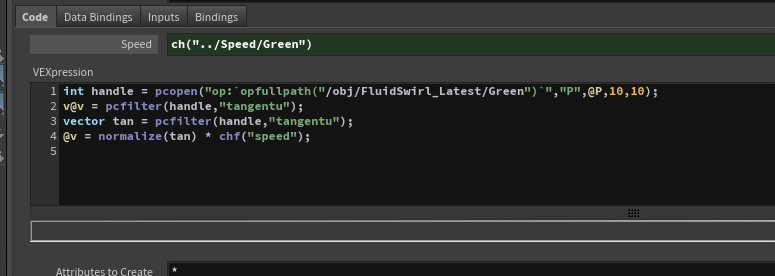
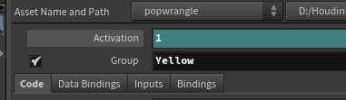

Week2
Team Member
Yiqi Zheng (Fx)
Riley Ho (Fx)
Itim Kongsakulvatanasook (Fx)
Sofia Mancias (Compositing)
Jan 14
Benji Hopkins (Look Dev)
SCAD X HARBOR X ETC - Week 2
Hello, this is my second week of the Scad x Harbor x ETC blog!
These are the mentors' feedback from Tuesday's pitch.
Kyle:
-
Be careful with camera movement; avoid being too busy.
-
Slow down pacing—especially avoid zipping past FX details.
-
The second shot feels dizzy; reduce camera motion.
-
Dial down camera moves by ~15% to give FX time to read.
-
Highlight specific product details in each shot (e.g. inside the printer, not just the top surface).
-
Be very product-accurate; pay close attention to details (e.g. include LED lights if present).
-
Ensure lighting shows painterly colors clearly against a black background.
Hailey:
-
Make sure colors pop against the black environment.
-
Color and lighting choices need strong visual contrast.TV reference is strong and appropriate.
Beck：
-
Show what the product can do, not just the product itself.
-
Overall pacing feels too fast—slow down to showcase FX and details.
Molly：
-
Camera moves should feel more orchestrated and intentional.
-
Many shots end in similar product positions—add more variation.
-
Make Shot 2 more macro / close-up.
Stephan：
-
FX could act as a light source (emissive FX).
Billy：
-
Decide whether the camera moves or the object moves—avoid doing both at once.
-
Clearly define the product’s visual language first.Once the visual language is defined, it will clarify whether to emphasize camera motion or product details.
To-Do List:
-
Create a fluid flow path
-
Ensure the curve can guide the fluid to form a smooth flow
-
Adjust the position and speed to match the storyboard (the fluid flows into the holes one by one)
Fluid Test:
Based on the storyboard, I started with a fluid test. The basic motion is that the six colored flows start off-screen, swirl together, and then go into the holes one by one.
References:
I don't exactly found same motion reference, but I found what the fluid should looks like when they go into the holes.


I started by creating curves, which serve as the guidelines for the fluid path. And also divide they as different colors and group.
Create a sphere as emitter of fluid. And use popnet to generate the particles, which can be converted to fluid


This VEX code samples the tangent direction from nearby curve points and uses it to drive the particle velocity, allowing the fluid to follow the curve smoothly while maintaining consistent motion speed controlled by a parameter.
I also implemented top-level controls to manage the global flow speed and to sequence the colored fluid streams into the holes individually.

Those are flipbooks with two fluid paths.

I also assigned different emitter groups so that each color follows its corresponding color path, and I still need to investigate why the fluid becomes thinner as it approaches the holes.
Problem:

I still need to figure out why the fluid becomes thinner as it gets closer to the holes.
For the next step, I plan to combine a Vellum solver to make the fluid feel more sticky and paint-like, and further polish the motion path.
-
Refine the fluid path
-
Integrate Vellum for a sticky, paint-like fluid effect